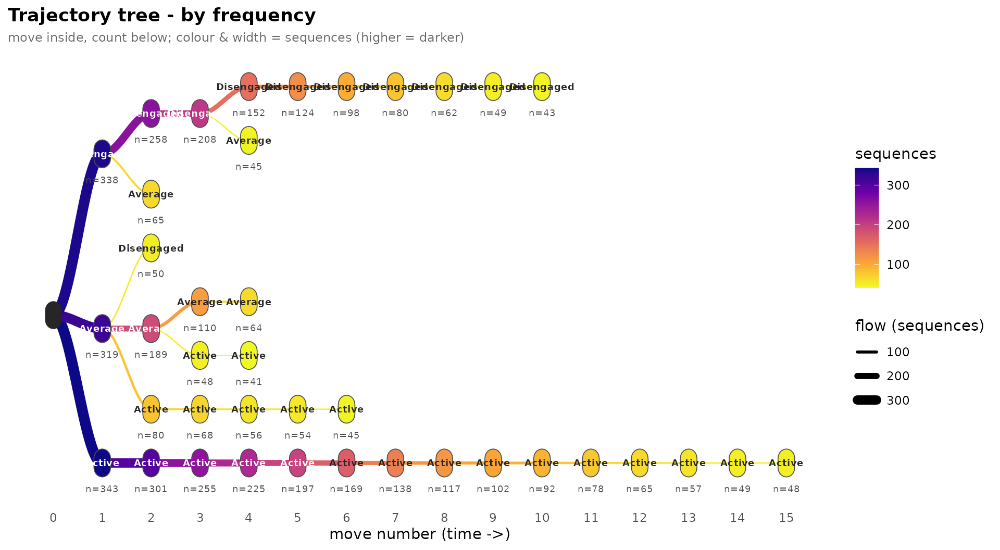
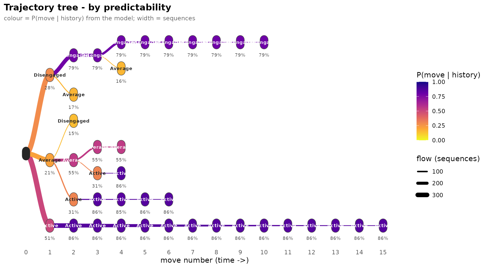

Case study: engagement trajectories
Written by Mohammed Saqr and Sonsoles López-Pernas
Source:vignettes/articles/case-engagement.Rmd
case-engagement.RmdEngagement in a course is not a fixed trait. Students move between active participation, average involvement and disengagement from one week to the next, and the sequence of these states over a course is a trajectory. Longitudinal studies of online engagement describe such trajectories as largely stable, with a minority of students drifting into persistent disengagement. Two questions follow for anyone who wants to act on them. The first is how persistent disengagement is once it begins. The second is whether the route into disengagement matters: is a student who has recently dropped from active to disengaged in the same position as one who has been disengaged for several weeks, or does the earlier history change what comes next?
A first-order Markov chain answers the first question and assumes the answer to the second: the next state depends only on the current one. A variable-order transition tree (Ron, Singer & Tishby, 1996; Bühlmann & Wyner, 1999) relaxes that assumption locally. It keeps a longer history only where that history changes the prediction, so the fitted tree is itself an answer to the question of how far back the past reaches.
This case study fits such a tree to the weekly engagement states of 1000 learners. It asks how persistent each state is, which histories lead into disengagement, how much memory the process has, what the forward trajectories look like, and whether sequences simulated from the fitted model reproduce the observed data.
Data
engagement is a bundled wide sequence frame: one row per
learner and one column per time-step.
- Sequence: each row — one learner’s trajectory, 1000 learners.
-
Time: columns
T1toT25— successive time-steps of the course; trajectories run for 23 to 25 steps, and trailingNAmarks the end of a shorter trajectory. -
State: each cell — the engagement state,
Active,AverageorDisengaged.
The frame is already in the shape that context_tree()
consumes, so no reshaping is needed.
How persistent is each state?
The tree is grown to a depth of four time-steps, with at least ten occurrences required for a context to receive its own node.
tree <- context_tree(engagement, max_depth = 4L, min_count = 10L)
tree#> <transitiontrees> 109 nodes, depth <= 4, 3 states [unpruned]
#> alphabet : Active, Average, Disengaged
#> fit on : 1000 sequences, 24555 observations
#> smoothing: floor(ymin=0.001, rule=interpolate) min_count = 10
#> (start) n=24555 -> Active (0.51)
#> |-- Active n=11894 -> Active (0.86)
#> | |-- Active n=9766 -> Active (0.86)
#> | | |-- Active n=7994 -> Active (0.86)
#> | | | |-- Active n=6546 -> Active (0.86)
#> | | | |-- Average n=984 -> Active (0.85)
#> | | | `-- Disengaged n=209 -> Active (0.85)
#> | | |-- Average n=1215 -> Active (0.85)
#> | | | |-- Active n=246 -> Active (0.86)
#> | | | |-- Average n=641 -> Active (0.83)
#> | | | `-- Disengaged n=260 -> Active (0.89)
#> | | `-- Disengaged n=256 -> Active (0.86)
#> | | |-- Active n=15 -> Active (0.87)
#> | | |-- Average n=31 -> Active (0.87)
#> | | `-- Disengaged n=196 -> Active (0.88)
#> | |-- Average n=1473 -> Active (0.86)
#> | | |-- Active n=296 -> Active (0.86)
#> | | | |-- Active n=241 -> Active (0.87)
#> | | | `-- Average n=40 -> Active (0.90)
#> | | |-- Average n=781 -> Active (0.85)
#> | | | |-- Active n=150 -> Active (0.84)
#> | | | |-- Average n=420 -> Active (0.85)
#> | | | `-- Disengaged n=163 -> Active (0.88)
#> | | `-- Disengaged n=316 -> Active (0.87)
#> | | |-- Active n=20 -> Active (0.90)
#> | | |-- Average n=41 -> Active (0.85)
#> ... 83 more nodes (use as.data.frame(x) or summary(x))The tree is fitted on 1000 sequences and 24555 observed states. With
no history the most likely state is Active (0.51), and
after Active the most likely state is again
Active (0.86). The first branches of the tree show how
little the deeper Active histories change this: after two,
three or four active steps the probability of staying active remains
0.86.
state_frequencies() gives the overall distribution of
states.
state_frequencies(tree)#> state count proportion
#> 1 Active 12426 0.506
#> 2 Disengaged 6873 0.280
#> 3 Average 5256 0.214Half of all observed states are Active (50.6%), 28.0%
are Disengaged and 21.4% are Average.
common_pathways() restricted to the first-order contexts
gives the persistence of each state.
common_pathways(tree, depth = 1L)#> pathway depth count likely_next next_probability divergence changes_prediction
#> 1 Active 1 11894 Active 0.859 0.418 FALSE
#> 2 Disengaged 1 6598 Disengaged 0.786 0.945 TRUE
#> 3 Average 1 5063 Average 0.548 0.384 TRUEActive is the most persistent state (0.86 probability of
remaining active), followed by Disengaged (0.79).
Average is the least stable: a learner in the average state
stays there with probability 0.55. Once disengagement begins, it is
therefore likely to continue: a learner who is disengaged now is
disengaged at the next step four times out of five.
Does the route into disengagement matter?
If disengagement entrenches over time, the probability of remaining
disengaged should rise with the length of the disengaged run.
query_pathway() returns the next-state distribution for any
history.
query_pathway(tree, "Disengaged")#> Active Average Disengaged
#> 0.0485 0.1655 0.7860
query_pathway(tree, "Disengaged -> Disengaged")#> Active Average Disengaged
#> 0.0488 0.1599 0.7913
query_pathway(tree, "Disengaged -> Disengaged -> Disengaged -> Disengaged")#> Active Average Disengaged
#> 0.0534 0.1503 0.7963The probability of remaining disengaged is 0.786 after one disengaged step, 0.791 after two and 0.796 after four. The run length barely matters: disengagement is persistent, but it does not become measurably more persistent the longer it lasts.
mine_contexts() asks the reverse question: which
histories make disengagement the most likely next state? The
min_count argument keeps contexts seen at least 50 times,
and min_prob keeps those with a probability of at least
0.5.
mine_contexts(tree, "Disengaged", min_prob = 0.5, min_count = 50L)#> pathway depth count state prob
#> 1 Average -> Active -> Disengaged 3 82 Disengaged 0.902
#> 2 Average -> Active -> Active -> Disengaged 4 59 Disengaged 0.898
#> 3 Average -> Active -> Disengaged -> Disengaged 4 70 Disengaged 0.843
#> 4 Active -> Disengaged 2 581 Disengaged 0.818
#> 5 Active -> Active -> Disengaged 3 466 Disengaged 0.813
#> 6 Disengaged -> Average -> Disengaged -> Disengaged 4 80 Disengaged 0.812
#> 7 Active -> Disengaged -> Disengaged -> Disengaged 4 342 Disengaged 0.804
#> 8 Active -> Active -> Active -> Disengaged 4 373 Disengaged 0.802
#> 9 Disengaged -> Disengaged -> Disengaged -> Disengaged 4 2827 Disengaged 0.796
#> 10 Disengaged -> Disengaged -> Disengaged 3 3751 Disengaged 0.792
#> 11 Disengaged -> Disengaged 2 4960 Disengaged 0.791
#> 12 Active -> Disengaged -> Disengaged 3 449 Disengaged 0.788
#> 13 Average -> Disengaged -> Disengaged -> Disengaged 4 374 Disengaged 0.786
#> 14 Disengaged 1 6598 Disengaged 0.786
#> 15 Active -> Average -> Average -> Disengaged 4 74 Disengaged 0.784
#> 16 Active -> Active -> Disengaged -> Disengaged 4 357 Disengaged 0.782
#> 17 Average -> Average -> Disengaged -> Disengaged 4 285 Disengaged 0.779
#> 18 Average -> Disengaged -> Disengaged 3 502 Disengaged 0.779
#> 19 Disengaged -> Average -> Average -> Disengaged 4 85 Disengaged 0.765
#> 20 Average -> Average -> Disengaged 3 396 Disengaged 0.755
#> 21 Average -> Average -> Average -> Disengaged 4 206 Disengaged 0.752
#> 22 Active -> Average -> Disengaged -> Disengaged 4 100 Disengaged 0.740
#> 23 Average -> Disengaged 2 719 Disengaged 0.734
#> 24 Disengaged -> Average -> Disengaged 3 118 Disengaged 0.729
#> 25 Disengaged -> Disengaged -> Average -> Disengaged 4 87 Disengaged 0.724
#> 26 Active -> Active -> Average -> Disengaged 4 130 Disengaged 0.685
#> 27 Active -> Average -> Disengaged 3 155 Disengaged 0.684
#> is_modal
#> 1 TRUE
#> 2 TRUE
#> 3 TRUE
#> 4 TRUE
#> 5 TRUE
#> 6 TRUE
#> 7 TRUE
#> 8 TRUE
#> 9 TRUE
#> 10 TRUE
#> 11 TRUE
#> 12 TRUE
#> 13 TRUE
#> 14 TRUE
#> 15 TRUE
#> 16 TRUE
#> 17 TRUE
#> 18 TRUE
#> 19 TRUE
#> 20 TRUE
#> 21 TRUE
#> 22 TRUE
#> 23 TRUE
#> 24 TRUE
#> 25 TRUE
#> 26 TRUE
#> 27 TRUEAll 27 contexts end in Disengaged: no history that ends
in an active or average step makes disengagement the most likely next
state. The highest probabilities belong to recent drops from activity:
after Average -> Active -> Disengaged the probability
of remaining disengaged is 0.90 (82 occurrences), and after
Active -> Disengaged it is 0.82 (581 occurrences),
slightly above the 0.79 of Disengaged alone. The lowest
belong to arrivals from the average state: after
Average -> Disengaged the probability is 0.73 (719
occurrences). These are descriptive differences in the grown tree; the
pruning step below tests which of them are supported.
tree_dependence() measures, for each context, how far
its next-state distribution departs from that of its parent
(divergence) and how much next-state uncertainty it removes
(entropy_drop, in bits).
tree_dependence(tree, top = 8)#> pathway depth count divergence entropy
#> 1 Disengaged 1 6598 0.945 0.9143
#> 2 Active 1 11894 0.418 0.7196
#> 3 Average 1 5063 0.384 1.4047
#> 4 Active -> Average -> Disengaged -> Active 4 10 0.274 0.4825
#> 5 Active -> Disengaged -> Active 3 22 0.255 1.0226
#> 6 Active -> Disengaged -> Disengaged -> Active 4 11 0.152 0.4532
#> 7 Average -> Disengaged -> Active -> Active 4 31 0.151 0.5677
#> 8 Disengaged -> Average -> Active -> Disengaged 4 16 0.135 0.0228
#> entropy_before entropy_drop likely_next likely_before changes_prediction
#> 1 1.487 0.5732 Disengaged Active TRUE
#> 2 1.487 0.7679 Active Active FALSE
#> 3 1.487 0.0828 Average Active TRUE
#> 4 0.745 0.2624 Active Active FALSE
#> 5 0.744 -0.2791 Active Active FALSE
#> 6 0.708 0.2549 Active Active FALSE
#> 7 0.710 0.1426 Active Active FALSE
#> 8 0.514 0.4914 Disengaged Disengaged FALSEThe three first-order contexts dominate. Disengaged
departs most from the root (divergence 0.95) and changes the prediction
from Active to Disengaged. The longer contexts
in the list are rare (10 to 31 occurrences), and one of them,
Active -> Disengaged -> Active, has a negative
entropy_drop (-0.28 bits): the longer history leaves the
next state more uncertain than its parent does. Rare contexts of this
kind are the ones that pruning should remove.
How long is the memory?
compare_pruning() shows how many contexts each pruning
criterion keeps.
compare_pruning(tree)#> criterion n_nodes reduction_pct
#> 1 G2 17 84.4
#> 2 KL 68 37.6
#> 3 AIC 21 80.7
#> 4 BIC 6 94.5The grown tree has 109 nodes. The likelihood-ratio criterion (G²) keeps 17, AIC 21 and BIC 6; the Kullback-Leibler threshold is the most permissive and keeps 68. The criteria agree that most deep contexts are not supported, and differ in how many second-order refinements they retain.
pruned <- prune_tree(tree, criterion = "G2")
pruned#> <transitiontrees> 17 nodes, depth <= 4, 3 states [pruned]
#> alphabet : Active, Average, Disengaged
#> fit on : 1000 sequences, 24555 observations
#> smoothing: floor(ymin=0.001, rule=interpolate) min_count = 10
#> pruned by: G2 alpha = 0.05
#> (start) n=24555 -> Active (0.51)
#> |-- Active n=11894 -> Active (0.86)
#> | |-- Active n=9766 -> Active (0.86)
#> | | |-- Average n=1215 -> Active (0.85)
#> | | | `-- Disengaged n=260 -> Active (0.89)
#> | | `-- Disengaged n=256 -> Active (0.86)
#> | | `-- Average n=31 -> Active (0.87)
#> | `-- Disengaged n=312 -> Active (0.85)
#> | `-- Active n=22 -> Active (0.73)
#> |-- Average n=5063 -> Average (0.55)
#> | `-- Disengaged n=1043 -> Average (0.57)
#> `-- Disengaged n=6598 -> Disengaged (0.79)
#> |-- Average n=719 -> Disengaged (0.73)
#> `-- Disengaged n=4960 -> Disengaged (0.79)
#> |-- Active n=449 -> Disengaged (0.79)
#> `-- Average n=502 -> Disengaged (0.78)
#> `-- Disengaged n=80 -> Disengaged (0.81)The G²-pruned tree keeps 16 contexts below the root. In the
Disengaged branch it retains
Average -> Disengaged (0.73) and
Disengaged -> Disengaged (0.79), but not
Active -> Disengaged. The route into disengagement
therefore matters in one supported respect: a learner who arrives from
the average state is less likely to remain disengaged than one in an
established run. The higher persistence after an abrupt drop from
activity, seen in the grown tree, is not distinguishable from that of
Disengaged alone by the G² test.
tune_tree() gives a held-out comparison of memory
length. It cross-validates every combination of depth, minimum count and
pruning over five folds of learners.
tuned <- tune_tree(engagement, max_depth = 1L:4L, min_count = c(10L, 30L),
prune = c(FALSE, TRUE), folds = 5L, seed = 1L)
summary(tuned)#> <transitiontrees_tune summary> 16 configurations, 0 with a failed fold
#> selected (minimum held-out perplexity):
#> max_depth min_count smoothing prune perplexity n_nodes_avg
#> 2 10 floor(ymin=0.001, rule=interpolate) FALSE 1.934 13
print(as.data.frame(tuned), digits = 5)#> max_depth min_count smoothing prune logLik n_scored perplexity
#> 1 2 10 floor(ymin=0.001, rule=interpolate) FALSE -16200 24555 1.9343
#> 2 2 30 floor(ymin=0.001, rule=interpolate) FALSE -16200 24555 1.9343
#> 3 2 10 floor(ymin=0.001, rule=interpolate) TRUE -16202 24555 1.9345
#> 4 2 30 floor(ymin=0.001, rule=interpolate) TRUE -16202 24555 1.9345
#> 5 1 10 floor(ymin=0.001, rule=interpolate) FALSE -16206 24555 1.9347
#> 6 1 30 floor(ymin=0.001, rule=interpolate) FALSE -16206 24555 1.9347
#> 7 1 10 floor(ymin=0.001, rule=interpolate) TRUE -16206 24555 1.9347
#> 8 1 30 floor(ymin=0.001, rule=interpolate) TRUE -16206 24555 1.9347
#> 9 3 30 floor(ymin=0.001, rule=interpolate) TRUE -16210 24555 1.9351
#> 10 3 10 floor(ymin=0.001, rule=interpolate) TRUE -16217 24555 1.9357
#> 11 4 30 floor(ymin=0.001, rule=interpolate) TRUE -16218 24555 1.9357
#> 12 3 30 floor(ymin=0.001, rule=interpolate) FALSE -16225 24555 1.9363
#> 13 4 10 floor(ymin=0.001, rule=interpolate) TRUE -16229 24555 1.9366
#> 14 3 10 floor(ymin=0.001, rule=interpolate) FALSE -16234 24555 1.9370
#> 15 4 30 floor(ymin=0.001, rule=interpolate) FALSE -16290 24555 1.9414
#> 16 4 10 floor(ymin=0.001, rule=interpolate) FALSE -16332 24555 1.9447
#> n_nodes_avg folds_failed
#> 1 13.0 0
#> 2 13.0 0
#> 3 5.4 0
#> 4 5.4 0
#> 5 4.0 0
#> 6 4.0 0
#> 7 4.0 0
#> 8 4.0 0
#> 9 6.6 0
#> 10 7.4 0
#> 11 9.2 0
#> 12 36.6 0
#> 13 11.6 0
#> 14 40.0 0
#> 15 83.4 0
#> 16 105.6 0The selected configuration is the unpruned depth-two tree, with a held-out perplexity of 1.934. The first-order model scores 1.935, and the worst configuration in the grid, the unpruned depth-four tree, scores 1.945. The differences are in the third decimal. Engagement in these data is close to a first-order process: the current state carries nearly all the information about the next one, and longer histories add little that generalises to new learners.
What do the forward trajectories look like?
The context tree reads histories backwards, from the most recent
state. plot_trajectories() draws the complementary forward
view: the observed sequences as a prefix tree from the first time-step,
with branches kept when they are followed by at least
min_count learners.
plot_trajectories(pruned, min_count = 40L)
Each path from the left is a sequence of states that at least 40
learners share from the start of the course; branch width and color
reflect the number of learners. The learners start almost evenly divided
between the three states (343 active, 319 average and 338 disengaged).
The active and disengaged starts both continue in long runs: 48 learners
are active for all of the first 15 steps, and 43 learners who start
disengaged are still disengaged at step 10. Learners who start in the
average state split quickly between the other states. With
measure = "predictability" the same tree is colored by the
model’s probability of each move given its history.
plot_trajectories(pruned, measure = "predictability", min_count = 40L)
Moves that continue an active or disengaged run are predicted with probabilities of 0.86 and 0.79; switches between states and the first move are the less predictable ones. The first move is scored against the root distribution (51% active), which differs from the even split of observed starting states.
Does the model reproduce the data?
A fitted transition tree is a generative model. If it captures the
process, sequences simulated from it should resemble the observed ones.
simulate() with tidy = TRUE returns a wide
data frame in the same layout as engagement, which
context_tree() accepts directly.
simulated <- simulate(pruned, nsim = 1000L, seed = 1L, length = 24L,
tidy = TRUE)
head(simulated, 3)#> T1 T2 T3 T4 T5 T6 T7 T8
#> 1 Active Active Average Active Active Active Active Active
#> 2 Active Active Disengaged Disengaged Disengaged Disengaged Disengaged Disengaged
#> 3 Disengaged Disengaged Average Average Average Average Active Active
#> T9 T10 T11 T12 T13 T14 T15 T16 T17 T18
#> 1 Active Average Average Average Average Active Active Active Active Active
#> 2 Disengaged Active Active Active Active Average Average Disengaged Active Active
#> 3 Active Active Active Active Active Active Active Active Active Active
#> T19 T20 T21 T22 T23 T24
#> 1 Active Average Average Active Active Active
#> 2 Active Active Active Active Active Active
#> 3 Active Active Active Active Average AverageThe simulated sequences are refitted, and the state distributions of the observed and simulated data are merged by state.
simulated_tree <- context_tree(simulated, max_depth = 4L, min_count = 10L)
merge(state_frequencies(tree), state_frequencies(simulated_tree),
by = "state", suffixes = c("_observed", "_simulated"))#> state count_observed proportion_observed count_simulated proportion_simulated
#> 1 Active 12426 0.506 12767 0.532
#> 2 Average 5256 0.214 4925 0.205
#> 3 Disengaged 6873 0.280 6308 0.263The simulated data contain somewhat more Active states
than the observed data (53.2% against 50.6%) and fewer
Disengaged states (26.3% against 28.0%). Part of this gap
comes from the simulation design: each simulated sequence starts from
the overall state distribution (51% active), whereas the observed
learners start almost evenly divided between the three states, and every
simulated sequence has 24 steps.
compare_trees() tests whether the transition structure
itself differs. It pools the two sets of sequences, permutes their
labels and compares the observed distance between the two trees with the
permutation distribution.
observed_tree <- context_tree(engagement, max_depth = 2L, min_count = 10L)
simulated_tree <- context_tree(simulated, max_depth = 2L, min_count = 10L)
summary(compare_trees(observed_tree, simulated_tree, iter = 99L))#> <transitiontrees_comparison summary>
#> distance null_mean null_sd null_q95 p_value iter n_pathways
#> 0.000692 0.000444 0.000215 0.000805 0.1 99 13The distance between the observed and simulated trees is not larger than the distances produced by random relabelling (p = 0.10 with 99 permutations). Within the depth-two contexts tested here, the transition structure of the simulated data is consistent with that of the observed data, although the small number of permutations gives the test limited resolution.
What the analysis shows
Engagement in these data is persistent and close to first-order. Active and disengaged states each tend to continue (probabilities 0.86 and 0.79), the average state is the least stable, and the probability of remaining disengaged barely changes with the length of the disengaged run. The route into disengagement makes a small, supported difference: learners who arrive from the average state are less likely to remain disengaged (0.73) than learners in an established run (0.79). Held-out perplexity confirms that histories longer than one or two steps add little predictive information, and the pruned model generates sequences whose transition structure matches the observed one.
The analysis has limits. engagement is a bundled example
dataset, so the estimates illustrate the method rather than describe a
real course. The model is homogeneous in time: it assumes that the same
transition rules hold at the start and at the end of the course, and it
pools all learners, so heterogeneity between groups of learners appears
only as averaged probabilities. The simulation check compares state
frequencies and depth-two transitions; it does not test sequence-level
properties such as the distribution of run lengths, and it uses only 99
permutations.
References
Bühlmann, P., & Wyner, A. J. (1999). Variable length Markov chains. The Annals of Statistics, 27(2), 480-513. doi:10.1214/aos/1018031204
Ron, D., Singer, Y., & Tishby, N. (1996). The power of amnesia: Learning probabilistic automata with variable memory length. Machine Learning, 25(2-3), 117-149. doi:10.1023/A:1026490906255